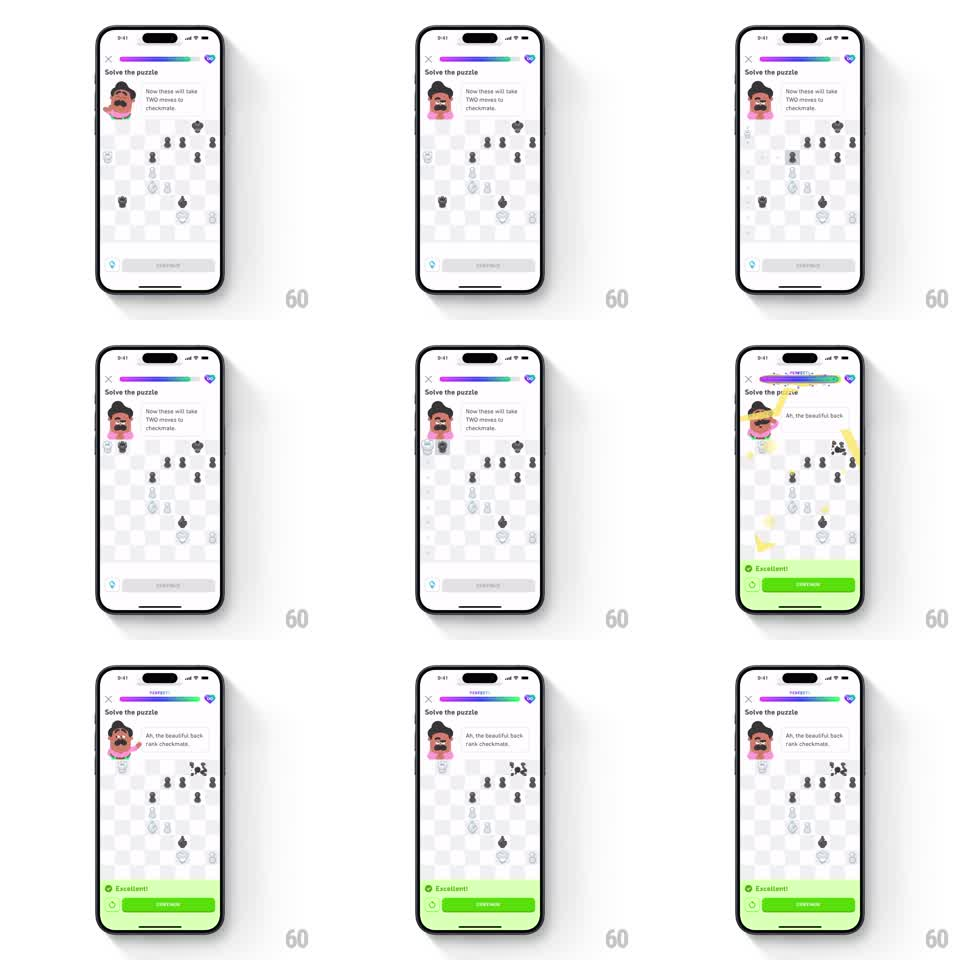

Media
Frame-by-frame

Rebuild this animation 1:1: Duolingo Chess's perfect-score celebration - a "PERFECT!" tag erupts on the header progress bar while multiple massive yellow lightning bolts strike across the board, pieces burst into particles, the screen shakes, and the green "Excellent!" sheet slides up under the coach's "Ah, the beautiful back rank checkmate."

Rebuild this animation 1:1: Duolingo Chess's perfect-score celebration - a "PERFECT!" tag erupts on the header progress bar while multiple massive yellow lightning bolts strike across the board, pieces burst into particles, the screen shakes, and the green "Excellent!" sheet slides up under the coach's "Ah, the beautiful back rank checkmate."
## Integration
Integration: stack-agnostic spec - springs given as stiffness/damping, timed motions as duration + curve; map every value to your framework and animation library of choice.
## Scene
Light chess puzzle screen. Header: close X, progress bar, gem counter. Coach avatar with speech bubble ("Now these will take TWO moves to checkmate" resolving to "Ah, the beautiful back rank checkmate."). Center: chessboard mid-puzzle. Bottom: gem row and SHOW HINT, replaced by the green success sheet ("Excellent!" + CONTINUE).
## Motion spec
Pattern: perfect-score multi-strike thunder with screen shake.
- The progress bar fills its final segment (400ms ease-out) and the "PERFECT!" chip slams in above it (scale 1.6 -> 1.0, spring ~400/14, one hard overshoot).
- Three lightning bolts strike the board in sequence (150ms apart): each draws top-to-bottom in 150ms with full-screen glow flash (white overlay at 0.35 opacity, 100ms), then splinters into sparks.
- Each strike triggers a screen shake (translateX/Y +/-5pt, 3 cycles, 180ms), decaying per strike.
- Captured pieces on the struck squares burst into pixel particles (gravity, 400ms life).
- Coach avatar pops to the excited expression (scale 1.0 -> 1.2 -> 1.0, 220ms) and the bubble crossfades to the checkmate line.
- The green "Excellent!" sheet slides up (280ms ease-out) as the last shake decays.
## Calibration
- Escalation is the point: three strikes, each with flash and shake, spaced so they read as separate hits.
- The "PERFECT!" slam is the loudest single motion - nothing else overshoots that hard.
## Reduced motion
Bar fills and tag fades in; one static bolt graphic for 300ms, no flash, no shake; sheet fades in.
## Don't miss
- Bolts land on different board regions, never the same diagonal twice.
- The white flash is full-screen and brief - it sells the thunder more than the bolt shape does.